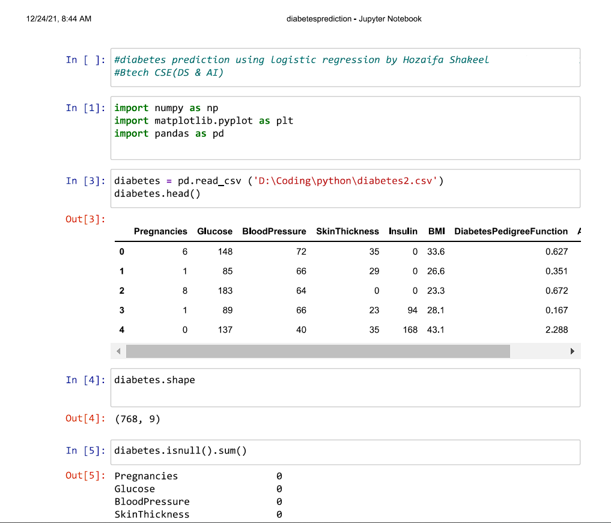
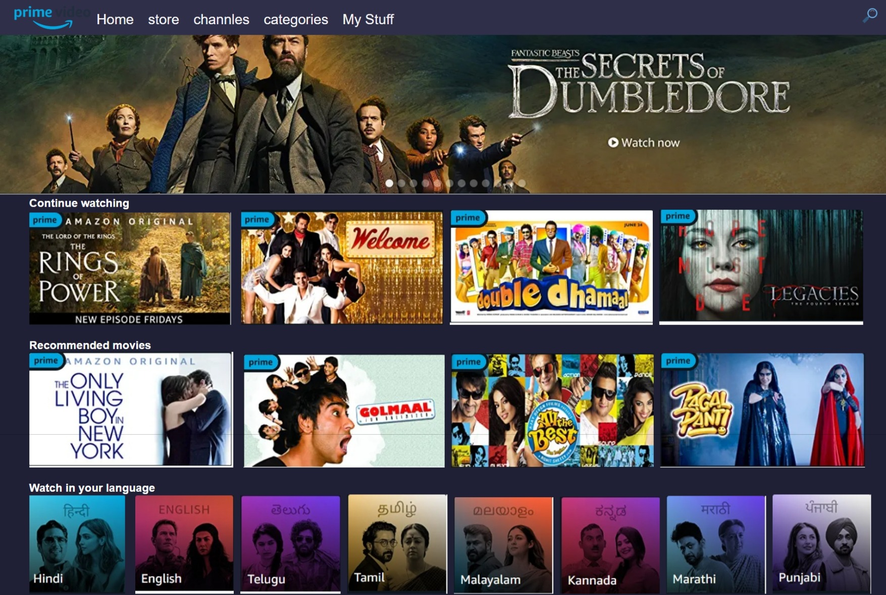
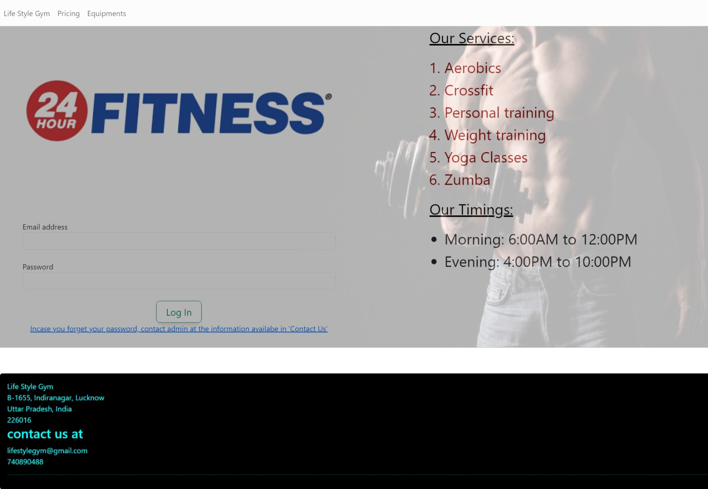

Hozaifa's Portfolio
Home
About
Projects
contact me
Work Experience
Diabetes Prediction Model:
This Model predicts whether a person will have diabetes or not based on different parametres.

Prime Video Homepage clone:
I tried to replicate the Homepage of Amazon primevideo and when we hover over movie thumbnails we are shown IMDB ratings.

Lifestyle Gym:
A website for Gym that has a login credential and can calculate BMI of a person when weight and height entered.
